Conocer y utilizar los apuntadores para el uso eficiente de la memoria.
Presentar el uso de las funciones y establecer cómo se realiza el paso de parámetros a funciones.
Conocer y aplicar el concepto de arreglos de una y más dimensiones en la resolución de problemas mediante algoritmos.
Conocer cómo es posible asignar de forma eficiente espacio en memoria.
1. Conceptos previos - ¿Que sucede cuando se declara una variable?#
Cuando una variable se declara esta pasa a ocupar un lugar de memoria cuyo tamaño dependerá del número de bytes asociados al tipo de dato con el cual esta se declara. Suponiendo que se tienen las siguientes instrucciones en C:
inti;i=35;
La siguiente figura ilustra su representación en memoria:
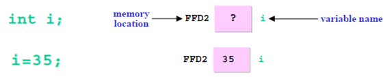
Fig. 1 Representación de una variable en memoria.#
Desde el punto de vista del mapa de memoria y suponiendo que una variable tipo int ocupa 4 bytes tenemos el siguiente resultado por instrucción:
Instrucción
Representación en memoria
inti;
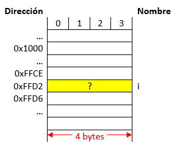
i=35;
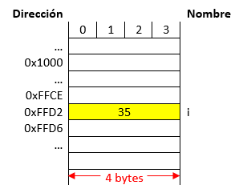
Como se puede ver en la figura anterior, lo que se modifica cuando se hace manipulación sobre variables es el contenido almacenado en un lugar especifico de memoria. Entender esto es de vital importancia para manejar el próximo tema.
2. Entrando en materia - Algunos aspectos sobre los apuntadores#
Un apuntador es una variable que almacena una dirección de memoria y no un valor como ocurre en el caso de las variables normales. La siguiente tabla resalta este hecho:
Instrucciones
Mapa de memoria
int*p; p=1000;
Nota: Supóngase que el apuntador p se encuentra en la posición 500
int*p; p=1000;
Nota: Supóngase que la variable p se encuentra en la posición 500
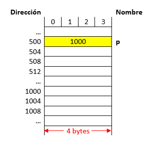
Como se puede notar en la figura anterior, cuando el valor almacenado en el apuntador hará referencia a la dirección 1000 y no al valor de 1000, esto nos permitirá acceder a dicho lugar de memoria desde el apuntador. Más tarde veremos cómo. Así mismo, como un apuntador guarda una dirección de memoria y teniendo en cuenta que para el ejemplo se supone una arquitectura en la cual se manejan 32 bits ( equivalentes a 4 bytes), esto hará que una variable tipo apuntador sin importar el tipo de dato al que apunte tenga un tamaño de 4 bytes. (Este tamaño se define por la arquitectura. Por ejemplo si la maquina es de 64 bits entonces el tamaño ocupado por una variable tipo apuntador será de 8 bytes).
Tipo: Tipo de dato al cual se desea apuntar, puede ser un tipo de dato simple (char, int, etc.) o un tipo de dato complejo como una estructura).
Modificadores del tipo: Puede contener cualquier combinación de los modificadores de tipo const, volatile y restrict.
Nombre: Nombre del apuntador.
Valor inicial: Valor inicial del apuntador.
La siguiente figura muestra esto lo anterior en términos del mapa de memoria:
Instrucciones
Mapa de memoria
shorti=5; short*ptr=&i;
Nota:
El tamaño de una variables short es de 2 bytes.
El tamaño de una variable tipo apuntador es de 4 bytes.
En el dibujo del mapa de memoria cada dirección aumenta de 1 en 1
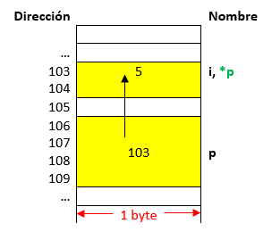
Como se puede notar en la figura anterior, lo que se guarda en el apuntador es la dirección base (dirección del byte de menor peso) de la variable a la cual se apunta. Para el caso anterior, la variable i ocupa 2 bytes (103 y 104) sin embargo, en el apuntador se almacena la parte menos correspondiente al byte pesado (byte 103).
Si observa la segunda instrucción anteriormente mostrada, la forma como se obtuvo la dirección de i fue por medio del operador dirección (&) antepuesto a la variable. La siguiente tabla se llena con base en la figura anterior:
Expresión
Significado
Valor
i
Contenido de i
5
&i
Dirección de i
103
p
Contenido del apuntador p
103
&p
Dirección del apuntador p
106
Note en la tabla anterior y la figura previa que con & lo que se obtiene es dirección base de una variable no importa su tipo ya sea una variable normal (char, int, float, etc), apuntador u otro. A continuación se muestra una forma simplificada (tomada de la sección Pointers basics de How Stuff Works) para visualizar los apuntadores y las variables comunes de manera gráfica sin tener que recurrir al bosquejo del mapa de memoria previamente realizado.
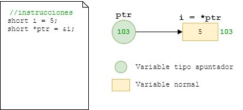
Fig. 2 Vista simplificada con variables y apuntadores.#
Note la diferencia en la gráfica, en el dibujo el circulo representa una variable tipo apuntador y como tal almacena una dirección de memoria, la de i para el caso (103); por otro lado el vinculo entre el apuntador y la variable se representa por medio de la flecha. Finalmente, el contenido de la variable puede ser accedido o manipulado desde el símbolo i, o desde al desreferenciar el apuntador (usando *ptr), pero este sera un tema a tratar después.
Una forma aun mas simplificada e incluso mas conveniente al momento de hacer pruebas de escritorio se muestra a continuación. En esta solo se resalta el vinculo del apuntador con la variable:
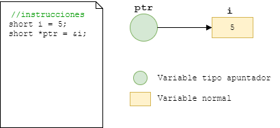
Fig. 3 Vista aun mas simplificada con variables y apuntadores.#
2.3. Manipulación de memoria mediante apuntadores#
Una de las aplicaciones más importantes es el acceso directo a memoria para su manipulación. Para ello, se manejan dos operadores importantes los cuales el operador referencia (&) y el operador des-referencia (*).
Consiste en asociar el apuntador a una dirección específica (durante la declaración o después de esta), para esto se suele usar el operador & para obtener la dirección de la variable en cuestión. A continuación se muestra la forma como normalmente se hace esto:
apuntador=&variable;
También es posible referenciar un apuntador pasándole el valor que se tiene en otro apuntador. Note que no se hizo uso del operador & en este caso:
apuntador=&variable;
Todo apuntador debe inicializarse antes de usarse. Si esto no se hace, cuando intente usarlo para hacer alguna operación en memoria el programa sacara un error. Un puntero que no ha sido inicializado se conoce como Wild pointer.
Para poder acceder al lugar de memoria que está siendo apuntado por el puntero y realizar operaciones de lectura y escritura sobre esta dirección de memoria se debe des-referenciar el apuntador. Para ello se hace uso del operador des-referencia (*) después de la declaración del apuntador. El contenido del lugar de memoria apuntado (lectura) se obtiene de la siguiente manera:
variable=*apuntador;
Ahora si lo que se desea hacer es escribir en el lugar de memoria apuntado se hace lo siguiente:
Suponga que se tiene el siguiente fragmento de código fuente:
#include<stdio.h>intmain(){inti,j;int*p;//Apuntador a un enterop=&i;*p=5;return0;}
También tenga en cuenta lo siguientes enunciados:
Suponga que i y j son de 4 bytes y ocupan las direcciones base 1000 y 1004.
El apuntador p ocupa las direccione base 2000.
Así mismo la arquitectura es de 64 bits por lo que el espacio ocupado por el apuntador sera de 8 bytes.
Muestre la ejecución paso a paso del código anterior resaltando la evolución en memoria.
Solución: Las instrucciones que se están evaluando en un momento dado se resaltan en la siguiente tabla:
Instrucciones ejecutadas
Contenido del mapa de memoria
Visualización al estilo HowStuffWorks
inti,j; int*p;//Apuntadoraunentero p=&i; *p=5;
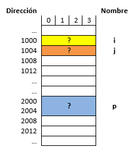
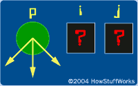
inti,j; int*p;//Apuntadoraunentero p=&i; *p=5;
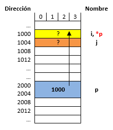
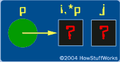
inti,j;int*p;//Apuntadoraunentero p=&i; *p=5;
Note que en la última instrucción resaltada el cambio del contenido de la sección de memoria asociado a la variable i no se realizó desde esta (i=5) sino desde el apuntador p (*p=5) el cual previamente se puso a apuntar a dicho lugar de memoria (p=&i).
La simulación del código anterior se muestra a continuación:
A continuación se muestra otro ejemplo en el cual se resalta que es posible que varios apuntadores estén apuntando a un mismo lugar de memoria. Tenga en cuenta lo siguientes enunciados:
Suponga que i y j son de 4 bytes y ocupan las direcciones base 1000 y 1008.
Los apuntadores p, q y r ocupan las direcciones base 2000, 3000 y 4000.
Así mismo la arquitectura es de 32 bits por lo que el espacio ocupado por el apuntador será de 4 bytes.
Como se vio en la primera parte del laboratorio, existen dos maneras de hacer llamados a funciones, por referencia y por valor. Cuando se realiza un llamado por valor; se trabaja sobre una copia de la variable pasada como argumento y por lo tanto la variable original (la que se pasó como argumento) no se modifica. Por otro lado, cuando se realiza un llamado por referencia al estar accediendo al lugar de memoria en el que se encuentra la variable pasada como argumento es posible modificar el valor original de la variable pasada como argumento. La siguiente tabla compara un poco la diferencia entre referencia y valor:
Ítem analizado
Llamada por valor
Llamada por referencia
Declaración
voidswap(inti,intj);
voidswap(int*i,int*j);
Definición
voidswap(inti,intj){ intt; t=i; i=j; j=t; }
intv1=1,v2=2; swap(v1,v2);
Invocación
voidswap(int*i,*intj){ intt; t=*i; *i=*j; *j=t; }
intv1=1,v2=2; swap(&v1,&v2);
El paso de funciones por referencia es de extrema utilidad cuando los argumentos que se están pasando a la función son pesados ya que esto evita que se tengan que hacer copias de dichos argumentos que en el peor de los casos pueden ocasionar que el programa colapse por llenar stack. También, mediante el uso de apuntadores, es posible superar la restricción que se tiene en la cual una función no puede retornar más de un elemento; así, por medio de referencias es posible retornar un array por ejemplo.
Para indicar que una función será pasada por referencia, se emplean apuntadores en la cabecera de la función, esto porque lo que se pasa como argumento es la dirección de memoria. Por ejemplo:
Para aterrizar un poco más lo anterior, supongamos esta función:
voidswap(int*i,int*j){intt;t=*i;*i=*j;*j=t;}
Como se pueden notar en la definición de la función anterior, en este caso ambos argumentos son pasados por referencia.
Ahora en lo que respecta a la invocación si lo que se pasa es como parámetro es una variable como tal se debe hacer uso del operador & para obtener la dirección de dicha variable y así inicializar el apuntador que funciona como argumento. Por otro lado si lo que se está pasando es un apuntador a una variable, no es necesario usar el operador & ya que el valor almacenado en este será una dirección de memoria. La siguiente tabla ilustra esto:
Caso
Invocación
Observaciones
Se está pasando una variable a una función que se llama por referencia
inta=5,b=10; swap(&a,&b);
Es necesario usar el operador & para obtener la dirección de memoria de las variables y así poder inicializar lo apuntadores que funcionan como argumentos.
Se está pasando apuntador a una función que se llama por referencia
inta=5,b=10; int*px=&a,*py; py=&b; swap(px,py);
Como lo que se pasan son apuntadores previamente inicializados, estos ya tienen la dirección de memoria de la variable que será pasada como argumento de la función, por lo tanto no es necesario usar el operador &.
La siguiente figura (tomada de HowStuffWorks) muestra cómo trabaja una función por referencia:
#include<stdio.h>voidswap_ref(int*x,int*y);voidswap_val(intx,inty);intmain(){intx=5,y=10;printf("---------------------------------------------------\n");printf("Llamada por valor \n");printf("Antes del swap -> x = %d, y = %d\n",x,y);swap_val(x,y);printf("Después del swap -> x = %d, y = %d\n",x,y);printf("---------------------------------------------------\n");printf("Llamada por referencia \n");printf("Antes del swap -> x = %d, y = %d\n",x,y);swap_ref(&x,&y);printf("Después del swap -> x = %d, y = %d\n",x,y);printf("---------------------------------------------------\n");return0;}voidswap_val(intx,inty){intt;t=x;x=y;y=t;}voidswap_ref(int*x,int*y){inttemp;temp=*x;*x=*y;*y=temp;}
La simulación del código anterior se puede observar a continuación:
La salida del código anterior se muestra a continuación.
Una función también puede retornar un apuntador cuando es invocada, para hacer esto, en la definición y declaración de la función se debe indicar que la función retornara un apuntador lo cual se hace precediendo el nombre de la función por un asterisco (Ver parte resaltada e rojo a continuación en la fig 5). A continuación se muestra la forma que debe llevar la función para este caso:
tipo_retorno*f(parámetros...)
Observe el siguiente fragmento de código, el cual consiste en una función que obtiene el valor mayor de un vector mediante apuntadores devolviendo la dirección del elemento mayor mediante un apuntador:
La declaración de la función anterior se muestra a continuación:
int*mayor(int*a,intn);
Otra forma de declaración puede ser:
int*mayor(int*,intn);
Recuerde lo importante en la declaración de la función es indicarle al compilador como van a usarse los parámetros.
Así mismo, note también, que lo realimente importante es que se declaró un apuntador a un tipo de dato específico, se inicializo, se actualizo y luego se retornó este, en general en la definición de la función se sigue la siguiente plantilla:
tipo*funcion(tipo*arg1,...){tipo*ptr;// Declaración del apuntadorptr=&arg;// Inicialización del apuntador/** Operaciones **/...returnptr;// Retorno del apuntador}
El código descrito por partes anteriormente, se muestra completo a continuación:
#include<stdio.h>int*mayor(int*a,intn);// Declaracionintmain(){inta[6]={1,2,5,9,-1,3};int*p;p=mayor(a,5);// Invocaciónprintf("El elemento mayor del vector es: %d\n",*p);return0;}// Definiciónint*mayor(int*a,intn){inti;int*m=a;a++;for(i=1;i<n;++i)if(*m<*a){m=a;a++;}returnm;}
A continuación se puede simular el código anterior:
La siguiente figura muestra el estado de ejecución del programa antes de hacer el retorno de la subrutina mayor:
Un arreglo es un conjunto o colección indexada que permite manejar elementos que son del mismo tipo de dato como un solo objeto. El siguiente fragmento de codigo muestra la declaración de varios arreglos:
Notese, que cuando no se pasa el tamaño en la declaracion entre corchetes; este es deducido de la lista de inicializacion (pasada entre llaves) o la cadena de caracteres (string) pasada al declarar. En sí, se sigue la siguiente forma:
Forma 1: Pasando el tamaño:
tipoarrayName[TAM]={valor1,valor2,...};
Nota: La cantidad de elementos de la lista de inicialización no puede superar el tamaño (TAM) del arreglo.
Forma 2: Pasando el tamaño:
tipoarrayName[]={valor1,valor2,...};
Por otro lado, cuando solo se declaran los arreglos pero no se inicializan, es obligatorio colocar entre corchetes el tamaño. La forma de hacer esto se muestra a continuación:
tipoarrayName[TAM];
El siguiente codigo muestra el caso en el que solo se declaran varios vectores de diferentes tipos tanto globales como locales:
En lo que respecta a la manipulacion de arreglos, es igual que en java. El uso de estructuras repetitivas para el manejo de los subindices en el arreglo es empleado. En los siguientes ejemplos se tiene ilustra esto de manera rapida.
Ejemplos
Hacer un progama que llene un arreglo de 10 elementos con los multiplos del 10 (1, 10, 20, etc.).
Solución: El código que soluciona el problema se muestra a continuación:
#include<stdio.h>#define TAM 10intmain(){intA[TAM];intnum=1;// Inicializando el arreglofor(inti=0;i<TAM;i++){A[i]=10*num;num++;}// Imprimiendo el arregloprintf("A = [ ");for(inti=0;i<TAM;i++){printf("%d ",A[i]);}printf("]\n");return0;}
La simulación del código anterior se muestra a continuación:
La aplicacion arroja el siguiente resultado:
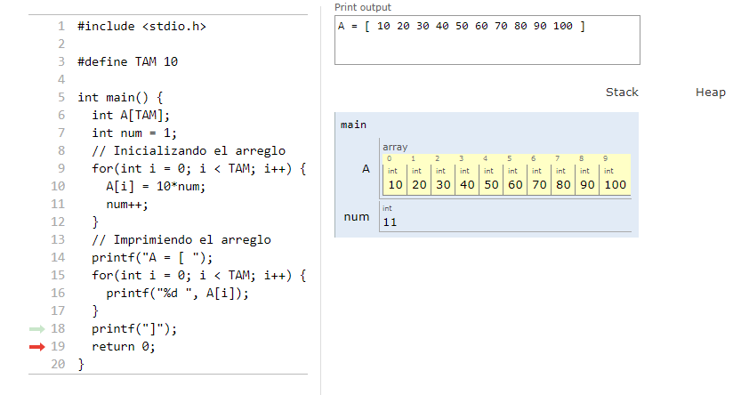
Fig. 7 Empleo de ciclos para manipulación de arrays.#
Hacer cree dos arreglos (A y B), luego, inicialice el arreglo A con numeros aleatorios entre el 1 y el 20, y finalmente lleve al arreglo B los elementos del arreglo A en orden inverso.
Solución: A continuación, se muestra el código solución:
#include<stdio.h>#include<stdlib.h> // required to use 'rand()'#include<time.h> // required to use 'srand(time(NULL))'#define TAM 10intmain(){srand(time(NULL));// required for "randomness"intA[TAM],B[TAM];intlimSup=20,limInf=1;// Inicializando el arreglofor(inti=0;i<TAM;i++){A[i]=rand()%limSup+limInf;// generate a number // between limInf and limSup}// Imprimiendo el arreglo Aprintf("A = [ ");for(inti=0;i<TAM;i++){printf("%d ",A[i]);B[TAM-(i+1)]=A[i];}printf("]\n");// Imprimiendo el arreglo Bprintf("B = [ ");for(inti=0;i<TAM;i++){printf("%d ",B[i]);}printf("]\n");return0;}
La simulación se muestra a continuación:
El resultado de la simulación se muestra a continuación:
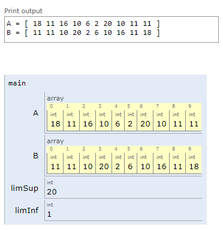
Fig. 8 Otro ejemplo de empleo de ciclos para manipulación de arrays.#
Es posible pasar arreglos como argumentos de funciones. Basicamente para el caso se tienen en cuenta los mismos 3 aspectos que se mencionaron previamente al tratar las funciones de manera introductoria, pero hay una leve diferencia cuando se emplean arreglos y es propiamente en la parte de la declaracion y la definicion donde se nota esto. Veamos la forma:
Observe el ejemplo 2 anteriormente analizado, muestra cada uno de los componentes (definición, declaracón e invocación) de lo que sería una función para imprimir entero un vector de cualquier tamaño.
Definición de la función:
// Definicion de la funcion para imprimir un array de cualquier tamañovoidimprimirVector(intV[],inttam){printf("[ ");for(inti=0;i<tam;i++){printf("%d ",V[i]);}printf("]\n");}
Declaración de la función:
// Declaracion de la funcion para imprimir un array de cualquier tamañovoidimprimirVector(intV[],inttam);
Observe el ejemplo 1 anteriormente analizado e implementelo en forma modular empleando funciones.
Solución: La implementación del código completo se muestra a continuación:
#include<stdio.h>#include<stdlib.h> // required to use 'rand()'#include<time.h> // required to use 'srand(time(NULL))'#define TAM 10voidimprimirVector(intV[],inttam);voidgenerarVectorAleatorio(intV[],inttam,intvInf,intvSup);voidcopiaReversa(intdestino[],intorigen[],inttam);intmain(){srand(time(NULL));// required for "randomness"intA[TAM],B[TAM];intlimSup=20,limInf=1;generarVectorAleatorio(A,TAM,1,20);copiaReversa(B,A,TAM);// Imprimiendo el arreglo Aprintf("A = ");imprimirVector(A,TAM);// Imprimiendo el arreglo Bprintf("B = ");imprimirVector(B,TAM);return0;}voidgenerarVectorAleatorio(intV[],inttam,intvInf,intvSup){for(inti=0;i<tam;i++){V[i]=rand()%vSup+vInf;}}voidimprimirVector(intV[],inttam){printf("[ ");for(inti=0;i<tam;i++){printf("%d ",V[i]);}printf("]\n");}voidcopiaReversa(intdestino[],intorigen[],inttam){for(inti=0;i<tam;i++){destino[tam-(i+1)]=origen[i];}}
El código anterior puede ser simulado a continuación:
La siguiente figura muestra el resultado del código anterior:
Como los apuntadores son variables es posible realizar operaciones matemáticas sobre ellos, sin embargo debido a que lo almacenado en estos son direcciones de memoria no todas las operaciones convencionales que se podrían hacer sobre una variable normal son posibles. La siguiente tabla muestra las operaciones validas:
Operación
Anotaciones
Añadir o sustraer un entero de un apuntador.
Esto hace que el puntero apunte a otro lugar de memoria diferente al que inicialmente estaba apuntando esto debido a la modificación de lo que se encuentra almacenado en este.
Sustraer un apuntador de otro.
Cuando se realiza esta operación, los dos apuntadores deben ser del mismo tipo.
Comparar dos apuntadores.
La comparación es comúnmente empleada para comparar cualquier puntero con el puntero a NULL usando los operadores de igualdad (== o !=).
Las tres operaciones anteriormente descritas son generalmente útiles para apuntadores que se refieren a los elementos de un array. Recordemos que un array consiste de un conjunto de variables del mismo tipo las cuales pueden ser accedidas bajo un mismo nombre usando subíndices. Cuando se declara un array lo que sucede en memoria es que se reservan un conjunto de posiciones contiguas en memoria tal y como se muestra en la siguiente figura:
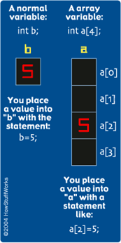
Fig. 10 Diferencia entre una variable normal y un vector.#
Para ilustrar lo anterior suponga lo que tiene dos apuntadores, p1 y p2 los cuales están apuntando a los elementos de un array a como el siguiente:
Si n es un entero, entonces la expresión p2=p1+n hace que p2 apunta al elemento a[i+n]. Ojo que i+n debe estar dentro del índice del array (es decir 0<=i+n<=Tamañodelarray-1). La siguiente figura muestra el caso para n=2, es decir que p2 apuntara al elemento a[i+2]
Lo anterior muestra que existe una relación entre la forma de escribir un array con subíndices y escribirlo con apuntadores aritmética de apuntadores. Para aterrizar un poco lo anterior analicemos la siguiente tabla:
Relación entre índices y array
En resumen
El nombre de un arreglo es realmente un apuntador al primer elemento en el array, así si a es un arreglo unidimensional entonces la dirección del primer elemento del array es &a[0] o simplemente a.
&a[0]↔a
La dirección del elemento i del array puede ser expresada como &a[i] o como a+i, por lo tanto existen dos manera de escribir la dirección de cualquier elemento del array.
&a[i]↔a+i
a[i] o *(a+i) representan el contenido que hay en la dirección en cuestión
a[i]↔*(a+i)
Para entender un poco lo anterior suponga que se ejecutan las siguientes instrucciones: